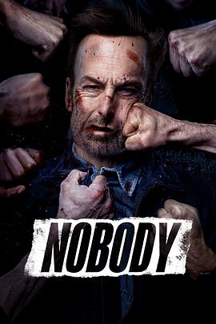

小人物 / Nobody
又名：杀神NOBODY(港) / 无名弑(台) / 无名小卒 / 无所依靠
虽然没啥剧情，但是看得非常过瘾，作为动作片全程无尿点（才发现尿点指的是上厕所的垃圾时间
作品信息
| 导演 | 伊利亚·奈舒勒 |
| 编剧 | 德里克·科尔斯塔德 |
| 主演 | 鲍勃·奥登科克 / 阿列克谢·谢列布里亚科夫 / 康妮·尼尔森 / 克里斯托弗·洛伊德 / 迈克尔·艾恩塞德 / 科林·萨尔蒙 / 罗伯特·菲茨杰拉德·迪格斯 / 比利·麦克莱伦 / 阿拉亚·门格沙 / 盖奇·芒罗 / 佩斯利·卡多拉思 / 亚历山大·帕里 / 亨伯利·冈萨雷斯 / 爱德森·莫拉莱斯 / J·P·马诺克斯 / 伊利亚·奈舒勒 / 谢尔盖·希纳罗维 / 斯蒂芬妮·西 / 鲁斯兰·鲁辛 / Bj·韦罗 / 达雅·查库莎 / 亚当·哈蒂格 / 克里斯汀·哈里斯 / 埃里克·阿塔瓦尔 / 沙龙·巴杰 / 鲍里斯·古利亚林 / 丹尼尔·伯哈特 / 阿兰·莫西 / 泰瑞·威瑟斯庞 / 吉姆·科比 |
| 类型 | 动作 / 犯罪 |
| 制片国家/地区 | 美国 / 日本 |
| 语言 | 西班牙语 / 俄语 / 英语 |
| 上映日期 | 2021-03-26(美国) |
| 片长 | 92分钟 |
| IMDb | tt7888964 |
说过什么
2021-05-22 18:08:40
看过 · 时间来自广播，短评来自标记页
虽然没啥剧情，但是看得非常过瘾，作为动作片全程无尿点（才发现尿点指的是上厕所的垃圾时间
2020-12-18 22:52:19
广播 · 想看
Saul goodman
最后一次看到是 2026-08-01T11:05:21+10:00 · 豆瓣原页